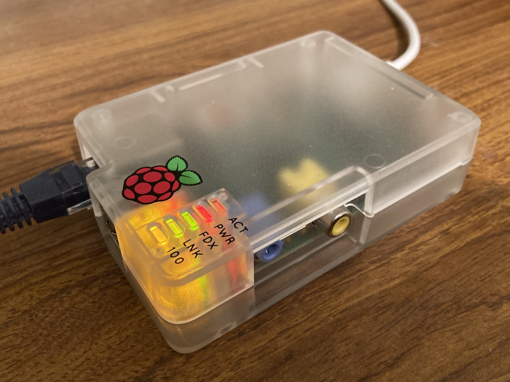
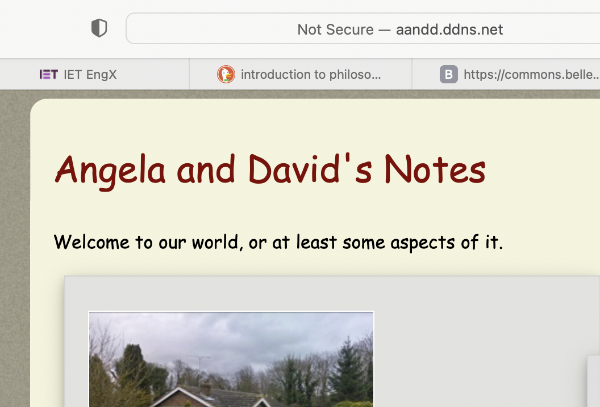

The Raspberry pi 1B that I bought in 2012 (it is now December 2021) only has a 700 MHz CPU and 512 MB of RAM, but I wondered if it would be powerful enough to act as a web server for my various sites. The pi is still connected to the router via a cable and the house electricity wiring. Initially I thought that, if I put my Journal on it, then I might be able to set up a search capability within my journal viewer page. However, it is really just an exercise, to find out what is involved in setting up a web server. My intent is to disable the capability when I have finished 'playing', since all my web pages are hosted on Github. At the moment, if I want to search files then I need to go into Github and use the search facilities there. Not very convenient, but it works.
To help satisfy my curiosity I did the following (the items marked with a † are intended to help secure the connection):
To change the user name and password I followed the instructions at https://raspberrytips.com/change-raspberry-pi-username/.
Lightpd is reported as bing lightweight and fast. So I followed the instructions on https://pimylifeup.com/raspberry-pi-lighttpd/ to install the lighttpd web server software. However, when I tried to access the default http page from Safari using the internal IP address of the Raspberry pi, I got a ‘403 Forbidden’ message. After a little investigation I found that the /var/www/html folder (where lighttpd looks for http files) was owned by root and so I didn’t have access. Also, there was no default html file. So I used 'sudo _R ugo+rw /var/www/html' to change the read/write access to ‘anyone’ and uploaded a test html file, CSS and image. Then browsing to 192.168.1.21 worked.
I used https://myexternalip.com to find the external IP address of our router. In addition to the IP it also referred to port 41480. My initial thought was that TalkTalk (the Internet Service Provider) use one IP address for many people. However, I later found that ignoring this port number worked.
Using the information provided at https://pimylifeup.com/raspberry-pi-ufw/ I installed and set up ufw (uncomplicated fire wall) on the Raspberry pi. Some additional information was also found at https://linuxiac.com/raspberry-pi-firewall/. I opened ports 80 (for http), 22 (for ssh) and 5900 (for vnc) in the firewall and then added a port forwarding rule to the router. So only port 9080 is open to the outside world and messages are forwarded to port 80 on the Raspberry pi. The ssh and vnc ports are only accessible from inside our private network.
Initially I set the router to forward messages on port 10080 to port 80 on the Raspberry pi. I found that this port is one of those blocked by many browsers and so changed the forwarding to incoming port 9080. I could then connect to the Raspberry pi web server by entering the external IP followed by :9080. So the basic infrastructure was working.
The next step was to register a domain name. This had to be a dynamic domain name in case TalkTalk change our IP address, which could happen if I restarted our router. The no-ip dynamic DNS service had been recommended, since they provide a minimal free facility. You need to 'refresh' the domain name every 30 days, but I probably won't keep it that long. no-ip check your external IP at a selected frequency (I chose 30 minutes) and link the domain name to it if it has changed. Of course, you are limited to the name you can choose, selecting from a number of root domains. I registered and chose http://aandd.ddns.net. So as to avoid the need to add :9080 to the end of the domain name I used the ‘Port 80 Redirect’ facility to set the port to 9080. Under ‘Manage DNS Records’ I enabled ‘Mask URL’ so that it just shows aandd.ddns.net in the address bar. However, it does now place an advertisement at the bottom of the page! Safari says "Not Secure" in the address line since I'm using http rather than https.
I wondered how much load was placed on the Raspberry pi when a web page is requested. So I used the ‘top’ command via ssh to display the cpu load (it is refreshed every 3s). Calling a web page seems to add between 2 and 8 percent load (averaged over the three seconds), depending upon the number of images in the page. This was lower than I had expected.
So overall it was quite an easy process. I did have some hichups, for example when I enabled ufw before opening the ssh and vnc ports. That meant my only access to the pi was via port 80, so I couldn't change anything. By looking at the memory card using my Linux system I was able to see the file system, find the ufw configuration file and set ufw to disabled. So, in effect, the process described above is a sanitised version of what I actually did.
© David James 2021 Last updated: 29th December 2021